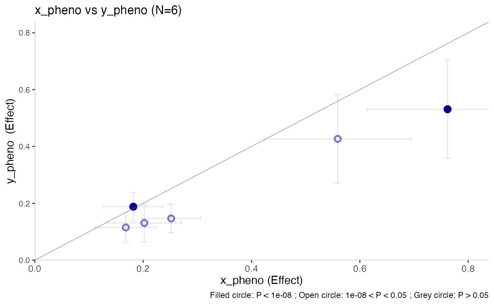

effectplot()
effectplot(
df,
pheno_x = "x_pheno",
pheno_y = "y_pheno",
annotate_with = "Gene_Symbol",
thresh = 1e-08,
ci_thresh = 1,
gene_label_thresh = 1e-08,
color = get_topr_colors()[1],
scale = 1,
build = 38,
label_fontface = "italic",
label_family = "",
nudge_y = 0.001,
nudge_x = 0.001,
size = 2,
segment.size = 0.2,
segment.linetype = "solid",
segment.color = "transparent",
angle = 0,
title = NULL,
axis_text_size = 10,
axis_title_size = 12,
title_text_size = 13,
subtitle_text_size = 11,
gene_label_size = 3.2,
snpset_thresh = 1e-08,
snpset_region_size = 1e+06,
max.overlaps = 10,
annotate = 0,
label_color = NULL
)The input dataframe (snpset) containing one row per variant and P values (P1 and P2) and effects (E1 and E2) from two datasets/phenotypes OR a list containing two datasets.
A string representing the name of the phenotype whose effect is plotted on the x axis
A string representing the name of the phenotype whose effect is plotted on the y axis
A string, The name of the column that contains the label for the datapoints (default value is Gene_Symbol)
A number. Threshold cutoff, datapoints with P2 below this threshold are shown as filled circles whereas datapoints with P2 above this threshold are shown as open circles
A number.Show the confidence intervals if the P-value is below this threshold
Deprecated: A number, label datapoints with P2 below this threshold
A string, default value is the first of the topr colors
A number, to change the size of the title and axes labels and ticks at the same time (default = 1)
A number representing the genome build. Set to 37 to change to build (GRCh37). The default is build 38 (GRCh38).
A string or a vector of strings. Label font “plain”, “bold”, “italic”, “bold.italic” (ggrepel argument)
A stirng or a vector of strings. Label font name (default ggrepel argument is "")
A number to horizontally adjust the starting position of each gene label (this is a ggrepel parameter)
A number to vertically adjust the starting position of each gene label (this is a ggrepel parameter)
A number or a vector of numbers, setting the size of the plot points (default: size=1.2)
line segment color (ggrepel argument)
line segment solid, dashed, etc.(ggrepel argument)
line segment thickness (ggrepel argument)
A number, the angle of the text label
A string to set the plot title
A number, size of the x and y axes tick labels (default: 12)
A number, size of the x and y title labels (default: 12)
A number, size of the plot title (default: 13)
A number setting the text size of the subtitle (default: 11)
A number setting the size of the gene labels shown at the bottom of the plot
A number representing the threshold used to create the snpset used for plotting (Only applicable if the input dataframe is a list containing two datasets)
A number representing the region size to use when creating the snpset used for plotting (Only applicable if the input dataframe is a list containing two datasets)
Exclude text labels that overlap too many things. Defaults to 10 (ggrepel argument)
A number, label datapoints with p-value below below this number (in the second df) by their nearest gene
A string or a vector of strings. To change the color of the gene or variant labels
ggplot object
# \donttest{
effectplot(list(CD_UKBB, CD_FINNGEN))

# }